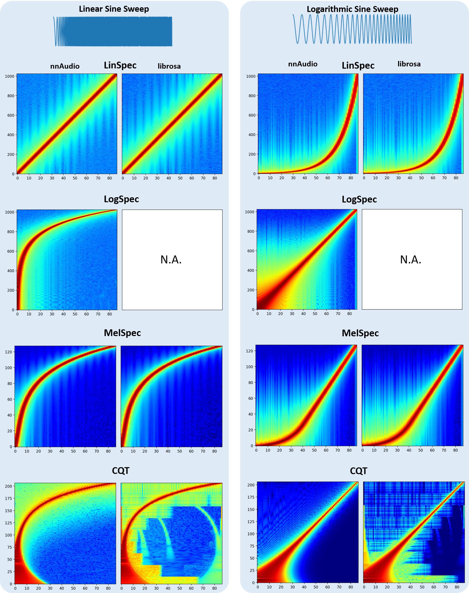
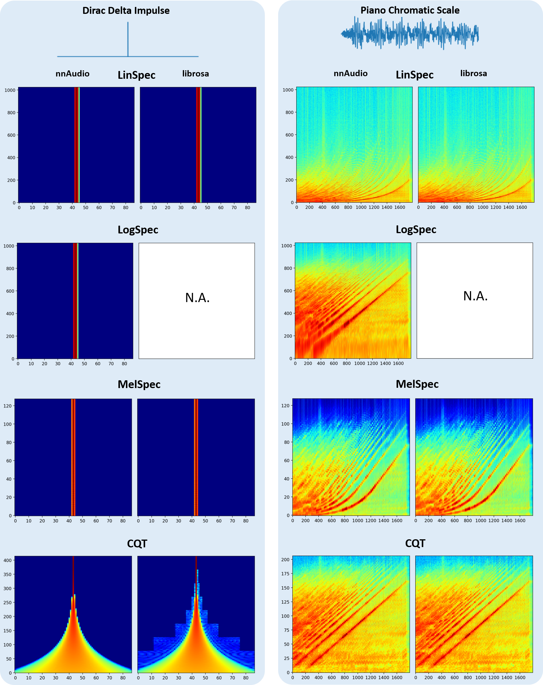
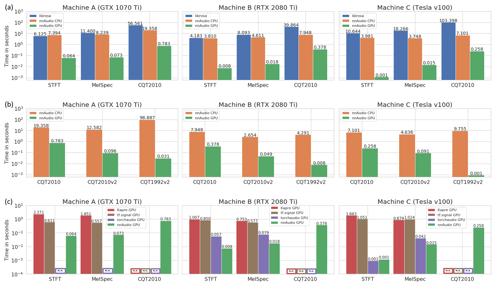
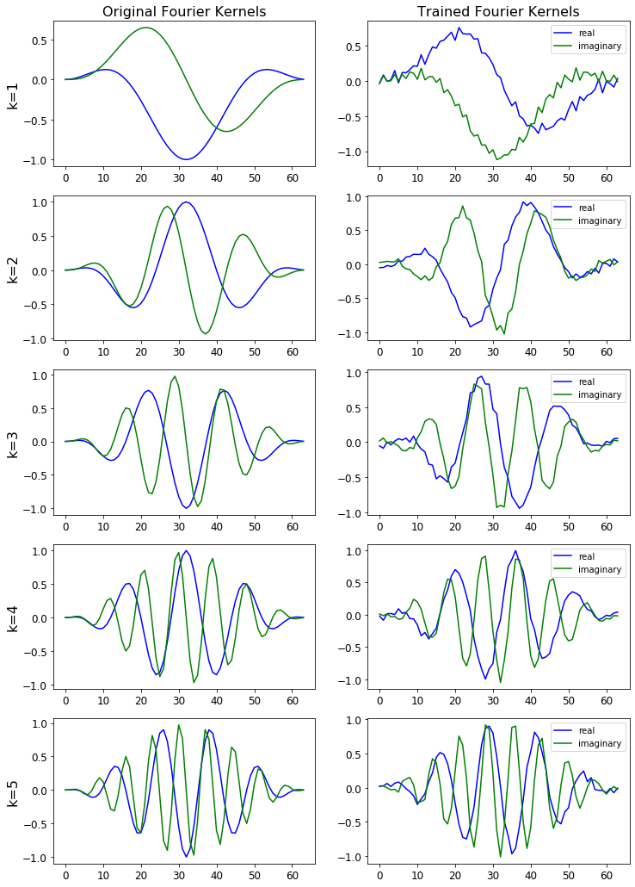
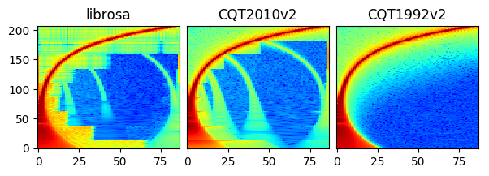

Introduction
nnAudio2 implements audio feature extraction as differentiable PyTorch nn.Module layers.
Transforms such as STFT, Mel spectrogram, MFCC, CQT, VQT, and Gammatone run on GPU (CUDA
or MPS) or CPU and can be embedded directly inside a neural network. Because the kernels are
nn.Parameter tensors, filter banks can optionally be made trainable — optimised
end-to-end alongside the rest of the model.
The figure below compares spectrograms produced by nnAudio2 and librosa for the same input.


Installation
Via PyPI
pip install nnaudio2
Via GitHub
pip install git+https://github.com/AMAAI-Lab/nnAudio2.git#subdirectory=Installation
Or install manually:
git clone https://github.com/AMAAI-Lab/nnAudio2.gitcd nnAudio2/Installationpip install .
Requirements
Python ≥ 3.11
PyTorch ≥ 2.0
NumPy ≥ 1.14.5
SciPy ≥ 1.2.0
Usage
Standalone
Import the specific transform you need and initialise it like any other nn.Module.
The input shape is (batch, samples).
import torch
import torchaudio
from nnAudio2.features.mel import MelSpectrogram
waveform, sr = torchaudio.load('audio.wav') # [channels, samples]
waveform = waveform.mean(0, keepdim=True) # mono, [1, samples]
mel = MelSpectrogram(sr=sr, n_fft=1024, hop_length=512, n_mels=128)
spec = mel(waveform) # [1, 128, T]
For an STFT:
from nnAudio2.features.stft import STFT
stft = STFT(n_fft=2048, hop_length=512, freq_scale='no', sr=22050,
output_format='Magnitude')
spec = stft(waveform)
On-the-fly processing inside a neural network
Because nnAudio2 transforms are standard nn.Module objects, they can be placed
anywhere in a model. The transform moves to the correct device automatically when
you call model.to(device).
import torch
import torch.nn as nn
from nnAudio2.features.mel import MelSpectrogram
class KeywordSpotter(nn.Module):
def __init__(self, n_mels=64, output_dim=12):
super().__init__()
self.mel = MelSpectrogram(
sr=16000, n_fft=480, hop_length=160,
n_mels=n_mels, fmin=0.0, norm=1,
trainable_mel=True, trainable_STFT=True,
)
self.classifier = nn.Linear(n_mels * 101, output_dim)
def forward(self, x): # x: [B, 16000]
spec = torch.log(self.mel(x) + 1e-10) # [B, n_mels, T]
return self.classifier(spec.flatten(1))
model = KeywordSpotter().to('cuda')
audio = torch.randn(8, 16000).to('cuda')
logits = model(audio) # [8, 12]
The model accepts raw waveforms directly; the spectrogram is computed on-the-fly during the forward pass.
Using GPU
All transforms support .to(device) exactly like any other PyTorch module.
mel = MelSpectrogram(sr=22050, n_fft=1024, hop_length=512, n_mels=128).to('cuda')
On Apple Silicon, use device='mps' instead.
Speed
The speed test below was conducted on three different machines, demonstrating that nnAudio2 running on GPU outperforms most existing audio processing libraries.
Machine A — Windows desktop, Intel Core i7-8700 @ 3.20 GHz, GeForce GTX 1070 Ti 8 GB
Machine B — Linux desktop, AMD Ryzen 7 PRO 3700, GeForce RTX 2080 Ti 11 GB
Machine C — DGX station, Intel Xeon E5-2698 v4 @ 2.20 GHz, Tesla V100 32 GB

Trainable kernels
STFT, Mel, and CQT kernels can all be made trainable. Pass trainable=True to
STFT(), or trainable_mel=True / trainable_STFT=True
to MelSpectrogram(), or trainable=True to
CQT().
Invertible CQT
iCQT() reconstructs a waveform from the complex output of
CQT1992v2(). It uses iterative Landweber inversion and is
fully differentiable. Reconstruction SNR exceeds 30 dB for signals whose frequency
content is within the well-sampled range of the chosen hop_length. For the CQT to
be invertible at a given frequency f, the hop must satisfy
hop_length ≤ sr / (2 * f / Q) where Q ≈ bins_per_octave / (2^(1/bins_per_octave) − 1).
Wideband signals (e.g. a full-range chirp) with a large hop_length will have reduced
SNR because high-frequency bins are Nyquist-undersampled in time.
from nnAudio2.features.cqt import CQT1992v2, iCQT
cqt = CQT1992v2(sr=22050, hop_length=512, output_format='Complex')
icqt = iCQT(sr=22050, hop_length=512)
X = cqt(waveform) # [B, n_bins, T, 2]
waveform_hat = icqt(X, length=waveform.shape[-1]) # [B, T]
The input must be the 'Complex' output of CQT1992v2 with
normalization_type='librosa' (the default). Magnitude-only CQT discards
phase information, so exact reconstruction from magnitude alone is not possible.
Step-by-step walkthroughs are available in the tutorials/ folder of the repository:
Part 1 — computing Mel spectrograms with nnAudio2
Part 2 — training a linear keyword spotter with trainable basis functions
Part 3 — evaluating the model and visualising learned kernels
Part 4 — replacing the linear classifier with a BC-ResNet
The figure below shows the STFT basis before and after training.

The figure below shows how the STFT output is affected by changes to the learned basis. Notice the subtle difference for the trained STFT.
CQT variants
CQT1992v2 (the default) computes the CQT directly in the time domain without
transforming both the input and the kernels to the frequency domain, making it faster
than the original 1992 algorithm.
CQT2010 uses the downsampling approach from the 2010 paper — the same algorithm
as librosa — and produces similar artefacts as a result.
For more detail, see the paper. All CQT variants are accessible via CQT API.
